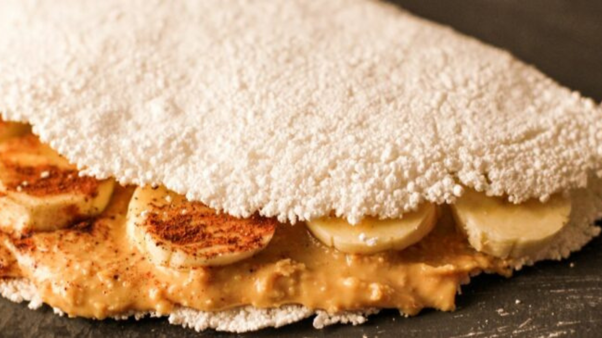
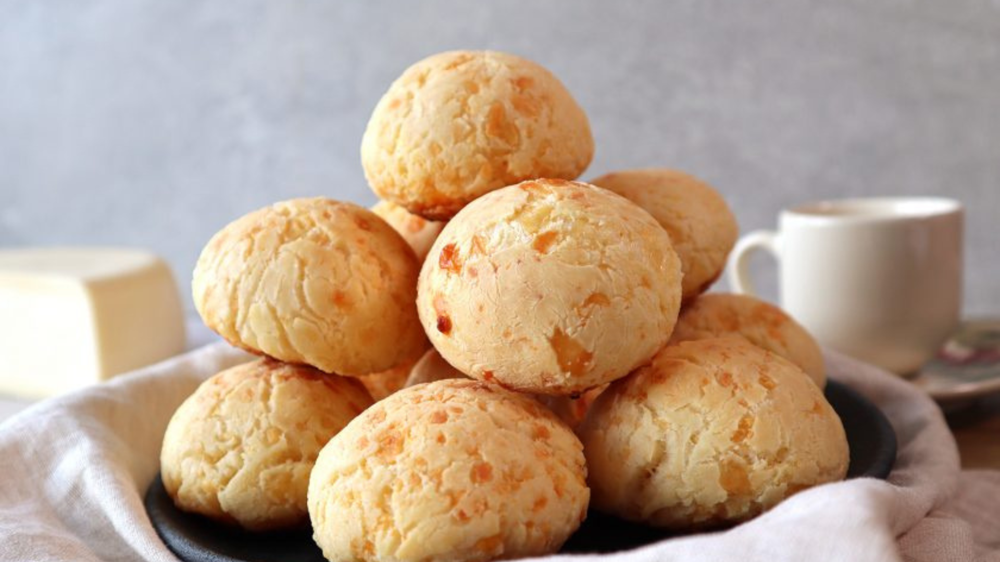

Café da Manhã
Tapioca de Banana com Canela

Ingredientes
- ½ xícara de farinha de tapioca
- 1 banana
- 1 colher de sopa de manteiga
- Canela a gosto
Modo de preparo
- Coloque a farinha de tapioca em uma frigideira, uma fina camada, apenas para cobrir o fundo.
- Deixe cozinhar até pegar forma e vire de lado.
- Deixe cozinhar até pegar forma e vire de lado.
- Adicione sobre metade da massa a banana picada, e a canela.
- Dobre-a e sirva.
Cheesecake

Ingredientes
- manteiga sem sal
- 100 g de manteiga sem sal
- biscoito maisena
- 200 g de biscoito maisena
- creme de queijo ricota
- 1 kg de ricota sem sal ou cream cheese
- leite condensado
- 395 g de leite condensado
- açúcar refinado
- 60 g de açúcar refinado
- açúcar de baunilha
- 4 g de açúcar de baunilha
- limão
- Raspa da casca de 2 limões
- ovo
- 4 ovos levemente batidos
- gelatina
- 10 g de gelatina sem sabor
- água
- 60 ml de água
- morango
- 400 g de morangos
- açúcar refinado
- 100 g de açúcar refinado
Massa de biscoito
Recheio
Cobertura
Modo de preparo
- Triture os biscoitos e misture com a manteiga até obter uma farofa úmida.
- Forre com esta massa o fundo de uma forma redonda desmontável de 25 cm de diâmetro por 6 cm de altura.
- Asse por 5 minutos a 150°C, em forno pré-aquecido.
- Reserve.
- Triture no processador, a ricota com o açúcar refinado o leite condensado e o açúcar de baunilha.
- Misture a esta massa a raspa da casca dos limões e os ovos.
- Encha com esta massa a forma preparada com a massa de biscoitos.
- Leve ao forno 165°C, por 15 a 20 minutos, ou até que o recheio esteja firme nas laterais e cremoso no centro.
- Umedeça a gelatina sem sabor em 60 ml de água e reserve.
- Triture os morangos e leve-os para ferver com o açúcar refinado.
- Retire do fogo e passe por uma peneira, junte a gelatina derretida e espere esfriar.
- Espere a cheesecake esfriar, desenforme-a e distribua a geléia por cima.
- Conserve resfriada por 5 dias entre 5°C e 8°C.
Massa:
Recheio:
Cobertura:
Pão de Queijo

Ingredientes
- 150ml de óleo
- 150ml de água
- 150ml de leite
- 500g de polvilho azedo
- 13g de sal (1 csb)
- 3 ovos
- 200g de queijo meia cura ralado
- 25g de queijo parmesão ralado
Modo de preparo
- Em uma panela coloque o óleo, a água, o leite e leve ao fogo para ferver.
- Coloque o polvilho e o sal em uma tigela grande.
- Assim que o líquido estiver fervendo, despeje-o sobre o polvilho e misture bem com uma colher de pau. Deixe a mistura amornar.
- Adicione os ovos e misture com a mão para envolver bem os ingredientes.
- Acrescente os dois queijos e misture bem com a mão.
- Lave as mãos e comece a modelar os pães, se a massa estiver grudando, unte as mãos com óleo. Cada pão de queijo ficou com 34g.
- Coloque em uma forma e leve para assar em forno preaquecido a 180°C por aproximadamente 35 minutos.